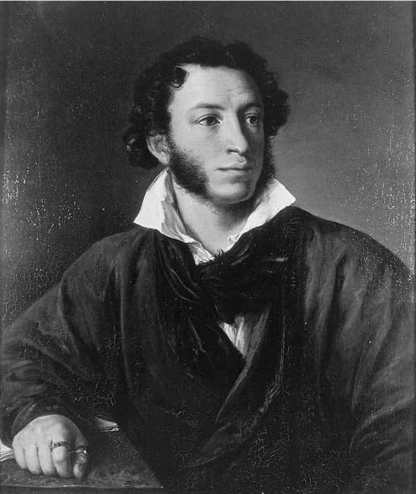

（丽贝卡·韦斯特，1941年）
1925年，英裔俄籍文学评论家D.S.米尔斯基在他的《俄国文学史》的开头就提到了普希金，那部著作也是由牛津大学出版社出版的，可算是“极简”通识读本的鼻祖。
七十年过去了，普希金仍被他的同胞们认定为俄罗斯作家中“至高无上的伟人”，这可能仍然让外国读者大惑不解。在他的国家以外，提到俄罗斯文学，人们首先想到的是散文 [1] ，特别是那些蕴含深邃思想、探索道德困境的散文。自19世纪末以来，这类体裁的翘楚当属托尔斯泰和陀思妥耶夫斯基，两人堪称鸿篇巨制的小说就恰恰属于这一类，西方读者一直认为，这两位才是最伟大的俄罗斯作家。托尔斯泰在《战争与和平》（1865—1869）中提出，人类只有在认识到自身的无力之后，才能对事态的发展有所把控，但他还是为书中的大量人物注入了个性，这部小说一贯被列为人类文学史上最重要的十部著作之一。陀思妥耶夫斯基所表现的伦理关怀，尤其是在一个没有上帝的世界里，道德的存在是否可能的问题，预见了现代哲学——从尼采到萨特——最为关注的一些重要焦点。
普希金没有写过长篇小说，他在其他方面甚至显得不怎么像“俄国人”，甚至还没有屠格涅夫像“俄国人”。屠格涅夫的《父与子》（1862）中有一个主要人物名叫巴扎罗夫，他对社会效用的痴迷（他坚信解剖青蛙要比创作水彩画更优越）因太过夸张而显得尽如人意地古怪。那部小说中的乡村别墅场景既迷人又充满异国情调，那里有农奴情妇、用丝带牵着的狗，还有为莫须有的荣誉问题而展开的决斗。我们很容易看出《父与子》与契诃夫的戏剧之间的传承，但要看出《叶甫盖尼·奥涅金》——它有太多随意的节外生枝、文雅反讽的弦外之音，还有种情感受到压抑的古怪氛围——或许是托尔斯泰的《安娜·卡列尼娜》（1875—1877）或陀思妥耶夫斯基的《白痴》（1868）的先驱，则远没有那么容易。普希金在自己的诙谐风趣中融入了一种惆怅的认识，即快乐在最容易获取时反而最飘忽不定，让这本书显得更像是承继了简·奥斯汀的《劝导》。的确，它在英语世界也颇有一些引人注目的后继者——包括纳博科夫的《洛丽塔》和维克拉姆·塞斯关于旧金山的诗体小说《金门》——但这些巧妙而刻意的文本反而加深了西方读者的成见，即从俄罗斯的文化传统来看，普希金十分古怪，据说那可是一种直接的、天然无雕饰的文化。

图1 亚历山大·普希金的肖像
不过每一位重要的俄罗斯作家都热衷于阅读欧洲文学；即便采取反对姿态，也从中获益匪浅。在某种程度上，《安娜·卡列尼娜》是对《包法利夫人》的反驳，但福楼拜这部小说开头几页的一个意象，即夏尔·包法利那顶难看的帽子（据作者本人评价说，它是琐碎生活的象征），与《哈吉穆拉特》的开头，托尔斯泰的叙述者注意到的那朵微不足道但生命力顽强的牛蒡花之间，却有着直接的联系。18世纪，俄国人一度担心他们的文学模仿性太强，翻译文学所占的比重过大。到19世纪，这样的担心已不复存在，代之以对本土文学成就的自豪，但对法国、英国、德国、西班牙和意大利文学的接受度并没有降低。就连那些对西方语言知之不多的作家，也贪婪地吸取着外国的素材。陀思妥耶夫斯基的小说固然受到果戈理的影响，但狄更斯的影响丝毫不弱。作家本人在1862年访英时对真正的英格兰厌恨有加，但那不过再次证明了他对狄更斯的追捧。1917年后，无论是流亡作家的苦涩生活，还是留在苏联的作家所经历的文化孤立，都未曾浇灭这样的热爱。安娜·阿赫玛托娃对T. S.艾略特和詹姆斯·乔伊斯的崇拜，约瑟夫·布罗茨基对约翰·邓恩的热爱，只是他们与西方文学关系亲密的两个广为人知的例子；出人意料的是，玛琳娜·茨维塔耶娃居然是美国畅销小说家赛珍珠的忠实拥趸。
在影响了英语世界读者对俄罗斯文学看法的评论家中，不是每一位都清楚“俄罗斯”与“西方”传统在艺术上的亲近关系。许多人本人就是作家——其实一直以来，对俄罗斯文学最引人注目的英语诠释往往体现在文学作品而非文学评论中。特别是契诃夫的短篇小说，在多位英语作家的作品中都留下了痕迹，如凯瑟琳·曼斯菲尔德、伊丽莎白·鲍恩、肖恩·奥法莱恩、雷蒙德·卡佛、艾丽丝·门罗、理查德·福特和威廉·特雷弗。契诃夫的短篇小说几乎摆脱了情节推进，仅凭少数几个既典型又难以捉摸的瞬间便捕捉到人物的整个世界，堪称构思短小叙事的典范。英语世界一贯崇尚不露痕迹的精湛技巧（英语中的“craft”一词包含“技艺”和“隐秘”两重含义，不是没有缘故），契诃夫恰是一例。不过如果说伟大的散文是指看起来不露斤斧的文学创作，那么普希金的某些叙事作品——《高加索的俘虏》（1822）、《杜布罗夫斯基》（1832—1833）或《上尉的女儿》（1836）——可能会令人失望。在这些作品中，情节意义重大，有一个果断的结局似乎十分要紧。此外，普希金更接近法国模式（夏多布里昂的《勒内》或康斯坦的《阿道夫》，以及帕尔尼和拉马丁的诗歌），这对他在英语文化中的名声可没什么好处，要知道英语文化素来将“法国”这个词等同于“陈腐、肤浅和虚张声势”。
平心而论，对普希金感觉陌生的不光是外国人，俄罗斯评论家也谈到过这一点。亲西方的评论家们认为，这表明普希金是真正的文明人，是可耻的落后社会中的一枝独秀；而在民族主义者看来，这是个重大的悲剧，象征着知识分子与“俄国人民”的疏离。哲学家古斯塔夫·施佩特是19世纪斯拉夫派运动（兴起于1830年代的运动，目的是痛陈西方化对俄罗斯文化的毒害）的后期追随者之一，他认为普希金是“一个意外”。普希金的作品“正是他个人的作品，是一个并非生发于俄罗斯民族精神的天才的作品”。但不管俄国人对普希金所表达（或未曾表达）的“民族精神”作何感想，他们普遍认可他是一位语言大师。其原因值得我们驻足片刻，稍事思考。
普希金的所有作品，从他那些亲近热情的、有时快人快语单刀直入的信件，到他最字斟句酌、含蓄优美和注重形式的抒情诗，都特别展现了在俄罗斯文学文化中占有特殊地位的两个特征，即便它们绝非该文化所独有。一是对文体语域、对语词的内涵极其敏感。这种敏感性特别关注来自教会斯拉夫语，即俄罗斯东正教的礼拜语言，和源自俄罗斯本土的语词之间的对立。“zlatyi ”和“zolotoi ”都只能翻译成“golden”，即“金色的”，“mladyi ”和“molodoi ”也都只能译为“young”，即“年轻的”，但这些语词就其关联来说，就跟英语的“leathern”和“leather”（意均为“皮革的”）或者“burthen”（负荷）和“burden”（负担）一样有所不同。普希金的诗作尤为复杂精妙，就在于它们把这些和其他文体层次融合在一起。其对各类形式特征的运用同样精妙，包括格律、类韵和头韵等。这样极大的文体密度，因充分利用俄语语法提供的手段以实现的凝练而得到了平衡，由此便可以容纳大量的省略（即作者认为读者可以通过推断得出的语词都被省略了），这是英语通常做不到的。普希金的诗歌跟文学俄语的规范是顺从与叛逆并存。它既有一切优秀俄语作品共有的冒险奇趣，同时又紧紧把握住这样一个文学传统所固有的修辞拓展；在该文学传统中，写作者会积极寻求而非刻意避免创造性重复，即所谓的“语词编织”——跟爱尔兰英语、非洲英语或口语化的英国和美国英语不同，官方的英国或美国英语都倾向于避免这样的重复。如此有意识地违反语言规范，正是为什么俄罗斯评论家和理论家罗曼·雅各布森声称现代读者如果想要读懂普希金，就“必须彻底抛弃普通的审美标准”的原因之一。
因此，我们可以用剧作家谢里丹谈到贺拉斯时所说的话来议论普希金：“要传达字面意义，还应借韵文形式。”但以格律诗的形式对普希金进行意译，弄不好译文听起来就很像某个因平庸而早已被世人遗忘的19世纪蹩脚诗人的作品：
这是《一八二五年十月十九日》的开头几行，英文译者是1840年代皇村中学（就是普希金上过的那个中学）的英语教师托马斯·巴奇·肖，在当时，这几行译文获得了很高的评价。但如今听起来，却古板恶俗得令人难以忍受。这并不是肖的错。他是严格按照原诗的格律翻译的；虽说他生造出“pale clouds”（“白云”）和“steaming frost”（“流动的霜”）等意象，但他精准传递了俄语的语感，算是了不起的成就。问题在于英语世界的语言品味已经改变了，而在俄罗斯却没有。虽然普希金这首诗的风格有一种18世纪挽歌式的形式主义，但“hath roll'd”（“溜到”）或“doff'd”（“脱落”）这些词语的俄语原文如今仍是口语中的规范用法，并没有因长期不用而显得陈旧过时。对于富有感情和色彩浓郁的形容词“bagryanyi ”（“绯红的”：“bagryanitsa ”一词用于形容绯红色的丝锦缎），“purply-gold”（“紫金色的”）是很有说服力的译文，但（为数不少的）英语诗歌读者早已全盘接受了T. S.艾略特对阳春白雪的诗歌用语的指摘苛评，这个词难免令他们厌恶。鉴于让俄语读者深受感动的短语可能会让讲英语的读者觉得尤其可笑或粗俗，以俄语为母语之人所喜爱的译文自然会让以英语为母语的人难以接受，反之亦然。那些听从约瑟夫·布罗茨基的建议，以叶芝晚期的风格翻译曼德尔施塔姆的英语译者，不大可能会得到其同时代读者的友善好评。即便普希金的作品由一位跟他同时代的天才译成了英文（如拉伯雷有幸遇到厄克特 [3] 那样），其译文也很可能令现代读者大失所望。本章开头引用的丽贝卡·韦斯特的话，就代表了那些试图以英语阅读普希金但不得要领的读者的懊丧反应。
不过也不必对此大惊小怪。虔诚而感伤地哀叹普希金的不可译性，似乎已经成了一切普希金介绍文本的一项类型要求：跟所有关于诗歌无法翻译的老套说法一样，凿凿有据，却不免以偏概全。的确，普希金的作品最好还是读俄文原文，就像最好能用希腊文阅读埃斯库罗斯，或者用意大利语阅读但丁。但用英语阅读这些作家总好过根本不读。此外，俄文版的莎士比亚和英文版的陀思妥耶夫斯基的例子已经证明，伟大作家的作品，翻译版本越多越好。只有将一个作家的作品多方面地全盘呈现出来，才有可能突显他或她的多样性。至少在1990年代之前，每当有较大的翻译项目启动，普希金的英文版往往就是《叶甫盖尼·奥涅金》再加上几首著名的情诗——《致克恩》（1825）、《“我爱过你”》（1829）、《幽暗的夜色》（1829）。他给人的印象是俄罗斯的拜伦，但他的大部分诗作在精神气质上更像蒲柏，又或者更像雪莱、布莱克、华兹华斯甚至彭斯。翻译的版本越多，读者就越有可能在这首或那首诗中，抑或在同一首诗的这个或那个版本中，获得“新的发现”，这正是（如意大利作家伊塔洛·卡尔维诺所说）我们阅读经典最重要的原因之一。
这一“新的发现”不一定在英文译本顺畅易读时才会显现出来。特德·休斯翻译的普希金浪漫主义诗歌《先知》（1827）就使用了原文中没有的刺耳的辅音碰撞，并抛弃了原文的押韵。不过或许只有这种生硬粗暴的演绎，才能用1990年代的英语表达出普希金坚信诗人拥有救世天赋（英语读者无法立即接受这样一种观念）的神秘原力。纳博科夫的注释散文版《叶甫盖尼·奥涅金》是对普希金文本的补充，而不是一般意义上的独立“翻译”，这又是一种演绎方式，它故意让译文与原文相去甚远，从而使后者的完整性不受损害。
下文中我自己翻译的普希金1836年的诗歌《“我为自己竖起了一座非手造的纪念碑”》采用的是上述第二种方法——过分追逐字面意义，而不自命为一首独立的诗作。以字数来看，它几乎比原文长一半，因为俄语词一般都要比英语长，所以这是不可避免的。这样一来，英语就显得比俄语啰唆得多。虽说有些头韵得以保留（完全出于偶然），但原诗的韵律却未能保留：原诗每一节的第四行都较短，以平衡前三行的长句。词汇也有问题。“podlunnyi ”这个优美的词语变成了“sublunar”（“月光下的”），听起来像是从美国航空航天局公告上引用来的；“nerukotvornyi ”（希腊语是“acheiropoietos ”，意为“非人手造像”）这个术语适用于某种神奇的偶像，在这里则必须意译。然而我的译文促使读者注意这首诗中一些隐含的问题，因为它频繁入选各类诗集且人们总喜欢以俄文背诵原诗，大多数人已经无法细细品味它的精妙之处了。而尽管普通的英语无法呈现普希金用语言组织诗歌主题的方式——比如用“p”做了一个声音游戏，引出人死后灵魂不朽的宏大母题——这首诗的戏剧性仍呼之欲出。
Exegi monumentum
Exegi monumentum
纪念碑
即便用英语来读，《“纪念碑”》（或许并不贴切，但这是通常附在这首诗上的标题）也不仅让人觉得获得了“新的发现”，而且还赋予我们一种在“经典”文本中同样重要的东西，即卡尔维诺所谓“好像是在重温我们以前读过的东西”的感觉。部分原因在于普希金的诗作本身就是对贺拉斯的一首颂歌的意译或模仿，“Exegi monumentum”这个拉丁引语就是明证。《“纪念碑”》还借用了18世纪的大诗人加夫里拉·杰尔查文早年间模仿贺拉斯的作品。杰尔查文的诗既是贺拉斯的直译版本，也是雕塑母题的直接版本：杰尔查文笔下的纪念碑没有任何虚幻或神秘的意义，而是“比任何金属都要坚固，比金字塔还要高大”。然而普希金的诗却不无揶揄地虚幻起来：从某些视角来看，一座“非手造的纪念碑”根本就不是一座纪念碑。
在某种程度上，这里的“人力不可能打造艺术品”看起来更像是20世纪而不是19世纪初的艺术品观念：它似乎更符合现代主义而非浪漫主义的特征。然而普希金这首诗作中的很多其他主题和母题——例如在“冷酷的时代”高贵地不朽的观念——则让人想起启蒙运动的文明理想，普希金坚信那些理想在抽象层面是切实存在的，哪怕他自己一生很少有机会践行那些理想。艺术不朽的主题在这首诗和莎士比亚的第55首十四行诗中都有体现，后者也是在一个自命不凡的君主政体下写成的（“白石，或者帝王们镀金的纪念碑/都不能比这强有力的诗句更长寿……”），然而《“纪念碑”》中的某些语句还利用了奥维德的《变形记》的尾声，暗示普希金一生挚爱奥维德，后者也是一位遭到善变的统治者流放的诗人。
以卡尔维诺的观点，《“纪念碑”》之所以是经典的典范，不仅因为它有股子挑逗式的亲近，还因为它“带着以前的解释的特殊气氛走向我们”。这首诗经常被理解为普希金的诗歌遗嘱。它是1836年遗留下来的少数几首完整的诗歌之一，那是普希金生命的最后一年，那时生活于他已近乎不堪忍受，财务上入不敷出，为发行新的文学期刊《现代人》而四处求告，再加上妻子娜塔丽娅不忠的传言不绝于耳，让他焦躁不安——正是这些传言直接导致普希金在1837年1月的决斗中死亡，年仅37岁。从诗中的“骨灰”和“腐烂”等词，可以联想到普希金自1820年代末的作品中就反复出现的对墓地场景的深情思慕。从这个角度来看，俄罗斯人的坟墓之上根据传统都放置着所谓“非手造的”耶稣圣像这一事实，自然至关重要。
然而把《“纪念碑”》看成一种“诗化的自杀遗言”回避了普希金在何种程度上预见到自己即将死亡或者决意赴死这一实质性问题，且无视普希金长期以来一直痴迷于纪念碑主题，以及更抽象的、美国普希金研究学者戴维·贝特阿所谓的普氏“创造性立传的潜质”，即有意识地创造自传式神话。这些神话一直扑朔迷离，面目繁多，而《“纪念碑”》绝非一首直白的诗作。普希金是想暗示只有另一位诗人才能够真正理解他的作品吗？这里提到的“亚历山大的石柱”（通常被认为意指亚历山大柱，是为纪念亚历山大一世带领俄国军队战胜了拿破仑而建造的）仅仅是为了把这个存在于纸面上的令人惊叹的工艺品与静止不动、为了让子孙后代称颂统治者而用凿子、滑车和泥刀建造的纪念碑对立起来吗？［因为这里没有使用通常的“亚历山大柱”（“Alexander Column”）这一名称，普希金使用“亚历山大的石柱”（“Alexandrian Pillar”）这个名词可能也是指埃及亚历山大港的灯塔——并暗示自己的诗歌会成为世界第八大奇迹。］既然普希金那么骄傲地对整个民族发表宣言，何以这首诗这般渊博晦涩，其引喻和典故之多，令学术评注始终无法下笔？
这些问题可以有许多种不同的回答。考察《“纪念碑”》这首诗在俄罗斯历史的不同时代如何被诠释——解读为对斯大林主义文学文化的先知式的召唤、一个殉道作家痛苦而愤怒的抗议、诗人与诗人间传递的加密讯息，甚或解读为戏仿——不光有助于了解这首诗本身的意义，至少同样有助于了解俄罗斯文化价值观的演变。然而《“纪念碑”》的重要性不仅仅在于个体文学评论家甚或作家对它的理解。在短短的五小节二十行诗中，它提出了七个主题，它们在19世纪和20世纪的俄罗斯文化中引起了广泛共鸣。这些主题是：为名人建造的纪念物成为国家力量和文化权威的表现方式；一个纪念已故著名作家的“纪念碑”；其他作家成为一个作家的理想读者；一个作家担当起国师的角色；作家成为上流社会的一员；文学在殖民或教化野蛮民族中所起的作用；写作与宗教经验之间的关系。这些“要点”指向俄罗斯文学文化的不同主题，同时也指向在普希金继承者们的写作中始终举足轻重的观念和问题，我也将以它们为路标，引领本书的发现之旅。
遵循这一旅行路线并不意味着轻易相信俄罗斯人每次在某个庆典上聚集时都会表达的信念，即“普希金就是我们的一切”。普希金那备受推崇的精练和晓畅只能代表文学文化的一个面向。他的很多继承者受到的启发并非源于他字斟句酌的精准，而是得自中世纪布道或18世纪颂诗的传统，它们各有不同，在某些方面甚至是对立的；有些则彻底抛弃了书面文化，而更倾向于民间传说和通俗文化。然而对普希金如何写作的清醒考察（哪怕继之以批判和否定）往往甚或通常是后世作者文学创作的起点。“普希金神话”的存在本身，即心心念念地用金石以及文字、音乐、戏剧或电影来纪念这位作家，已经让人很难回避对他的正面讨论。普希金是距离我们相对较近的历史存在，不同于莎士比亚，他的生平有据可查，或许我们不清楚动机，但起码他经历的事件都有记录。因此，我们很难把缅怀个人史的过程与纪念俄罗斯民族诗人截然分开，要知道对19世纪末以来每一位受过教育的俄国人而言，普希金都占据了他们大部分的童年时代。如此说来，我们最好还是从他们最初认识普希金的地方开启讨论：纪念碑。